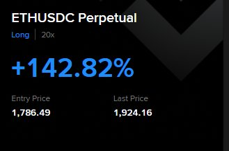

我的爱人劝我不要赌博（在金融市场投机），负四也总是说投机没有好下场。
但在这个 crypto+ 的投机/投资圈子里面，也流传着“赚认知之内的钱”云云。大抵也是劝退随意开单赌博吧。咱的认知不算高，但是在其他地方的认知也很低。
金融市场，是咱最能够接触到钱的地方。再就是尝试找到一份领取薪水的工作，再就是还能作什么呢？……
于是似乎矮个子里面挑高个子，反而金融投资认知最高 —— 事实上也确实如此，如果有足够的本金就可以作，但往往我手头上只有百来u，反而会激发咱的赌性，进而采取10x，20x，25x等的激进手段，企图翻倍，百倍之类。
但是我本身在这方面认知不足导致咱实际上加大杠杆并没有翻倍，即使会死也没有到达过高度，像是凉兮那样到达过一个很高的roi。咱的认知大抵要慢下来，例如雨夹雪很早很早就布局了eth，倒是咱前段时间才多eth而空btc——等它看上去似乎好了一点之后。
但在这个 crypto+ 的投机/投资圈子里面，也流传着“赚认知之内的钱”云云。大抵也是劝退随意开单赌博吧。咱的认知不算高，但是在其他地方的认知也很低。
金融市场，是咱最能够接触到钱的地方。再就是尝试找到一份领取薪水的工作，再就是还能作什么呢？……
于是似乎矮个子里面挑高个子，反而金融投资认知最高 —— 事实上也确实如此，如果有足够的本金就可以作，但往往我手头上只有百来u，反而会激发咱的赌性，进而采取10x，20x，25x等的激进手段，企图翻倍，百倍之类。
但是我本身在这方面认知不足导致咱实际上加大杠杆并没有翻倍，即使会死也没有到达过高度，像是凉兮那样到达过一个很高的roi。咱的认知大抵要慢下来，例如雨夹雪很早很早就布局了eth，倒是咱前段时间才多eth而空btc——等它看上去似乎好了一点之后。
